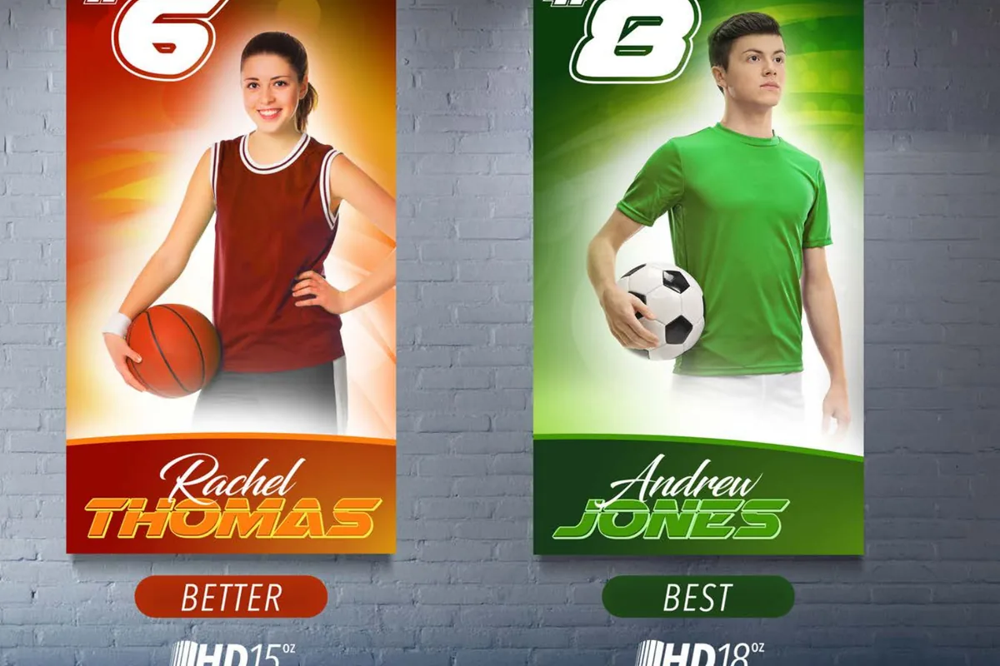

Everyday / graphic / relaxedTees and
Tees and
sweats
Strong foundations for screen printing, DTF graphics and everyday merch.
Discuss a garment09 / Garment direction
The garment sets the first feeling. Weight, fit, color and structure all influence how a decoration method lands on the body.

Start with the surface
You do not need to know a specific brand or style before reaching out. Tell us how you want the piece to feel and where it will be worn.
Strong foundations for screen printing, DTF graphics and everyday merch.
Discuss a garment
Built for embroidery, uniforms, teams and marks that need structure.
Discuss embroidery
Make room for different sizes, names, numbers and individual pieces.
Plan a mixed orderNeed a recommendation?
Share the artwork, audience and target date. We will suggest the garment direction that supports the full piece.
 The blank shapes the message
The blank shapes the message